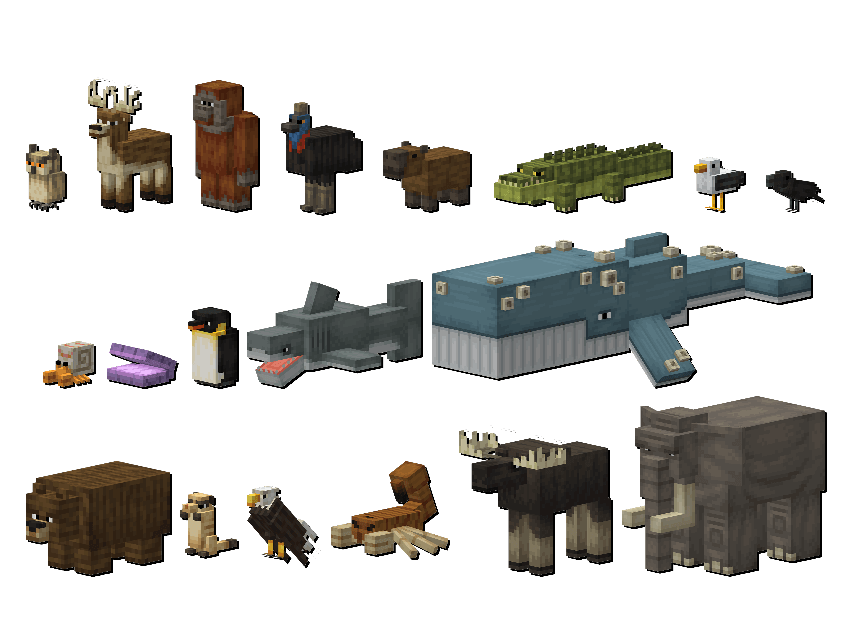
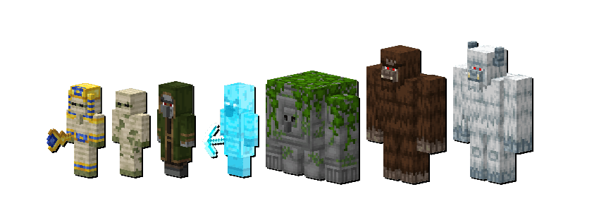
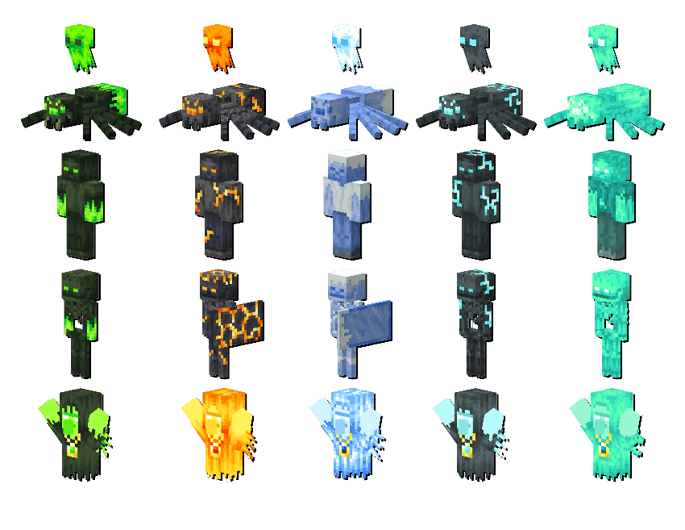

CoreCraft là gì?
CoreCraft là một bản mod mở rộng lớn cho Minecraft, biến trò chơi từ sinh tồn cơ bản thành một
trải nghiệm phiêu lưu RPG hoàn chỉnh. Mod bổ sung rất nhiều nội dung mới như thế giới (dimension),
boss, mob, vũ khí, vật phẩm và biome, giúp gameplay trở nên phong phú và thử thách hơn.
Dimension (Thế giới mới)
CoreCraft thêm nhiều chiều không gian hoàn toàn mới, mỗi nơi có phong cách và thử thách riêng:
- Arcanum: Thế giới phép thuật với rừng ma thuật, lâu đài cổ và các pháp sư nguy hiểm.
- Deep Mine: Hệ thống hầm mỏ sâu dưới lòng đất, chứa tài nguyên hiếm nhưng cực kỳ nguy hiểm.
- The Nightmare: Dimension khó nhất với không khí u ám, quái vật mạnh và các thử thách phức tạp.
Boss mới
Mod có hơn 20 boss khác nhau, mỗi boss đều có kỹ năng riêng, độ khó cao và phần thưởng đặc biệt. Người
chơi phải chuẩn bị kỹ trang bị và chiến thuật để đánh bại chúng. Đây là điểm nhấn chính của CoreCraft.
Mob mới
Có hơn 25 loại mob mới được thêm vào game, bao gồm quái thường, quái hiếm và sinh vật phép thuật.
Mỗi loại có hành vi và sức mạnh riêng, khiến việc khám phá trở nên nguy hiểm hơn.
Vũ khí và trang bị
CoreCraft bổ sung hơn 60 loại vũ khí và công cụ mới như kiếm, cung, gậy phép. Một số vũ khí có hiệu
ứng đặc biệt, giúp người chơi xây dựng nhiều lối chơi khác nhau như chiến binh, cung thủ hoặc pháp sư.
Block và vật phẩm
Mod thêm hơn 100 block và vật phẩm mới, bao gồm block trang trí, nguyên liệu chế tạo và các item đặc biệt
từ các dimension. Điều này giúp người chơi có thêm nhiều lựa chọn xây dựng và khám phá.
Biome mới
CoreCraft thêm hơn 14 biome mới với môi trường đa dạng như rừng phép thuật, vùng đất hoang và hang động sâu.
Mỗi biome có mob và tài nguyên riêng, tạo cảm giác mới mẻ khi khám phá.
Gameplay thay đổi
CoreCraft không còn là Minecraft sinh tồn thông thường mà trở thành một game RPG thực thụ:
- Có tiến trình phát triển (progression)
- Khám phá thế giới mới
- Đánh boss để lấy trang bị mạnh hơn
- Tăng độ khó và chiều sâu gameplay
Tổng kết
CoreCraft là một mod lớn với lượng nội dung rất nhiều, phù hợp với người chơi thích phiêu lưu,
khám phá và chiến đấu với boss. Mod mang lại trải nghiệm hoàn toàn mới so với Minecraft gốc và có thể
coi như một “bản mở rộng RPG” đầy đủ cho trò chơi.